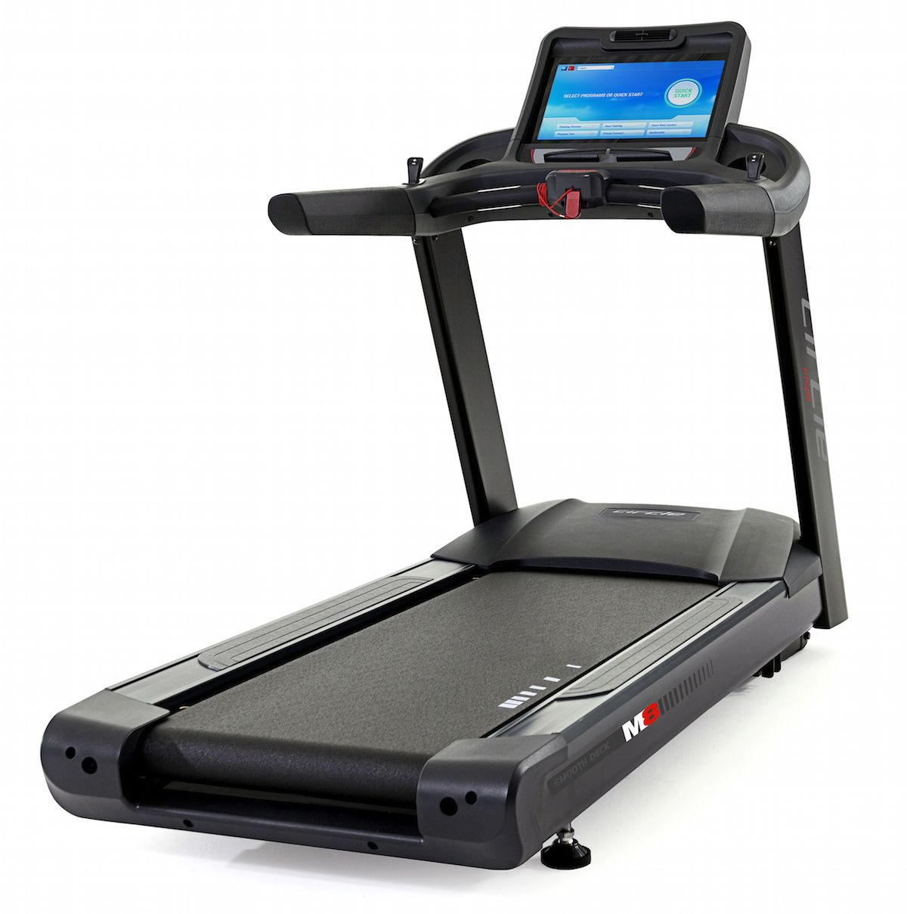
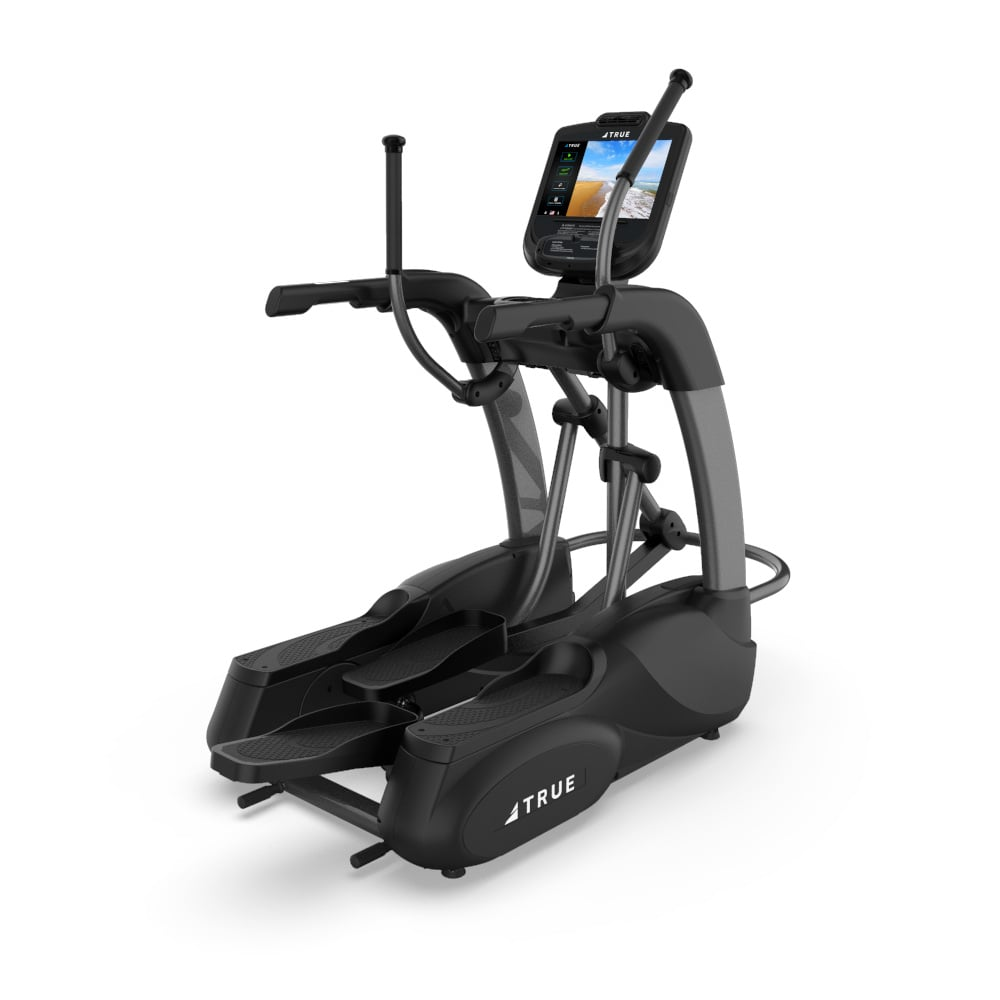
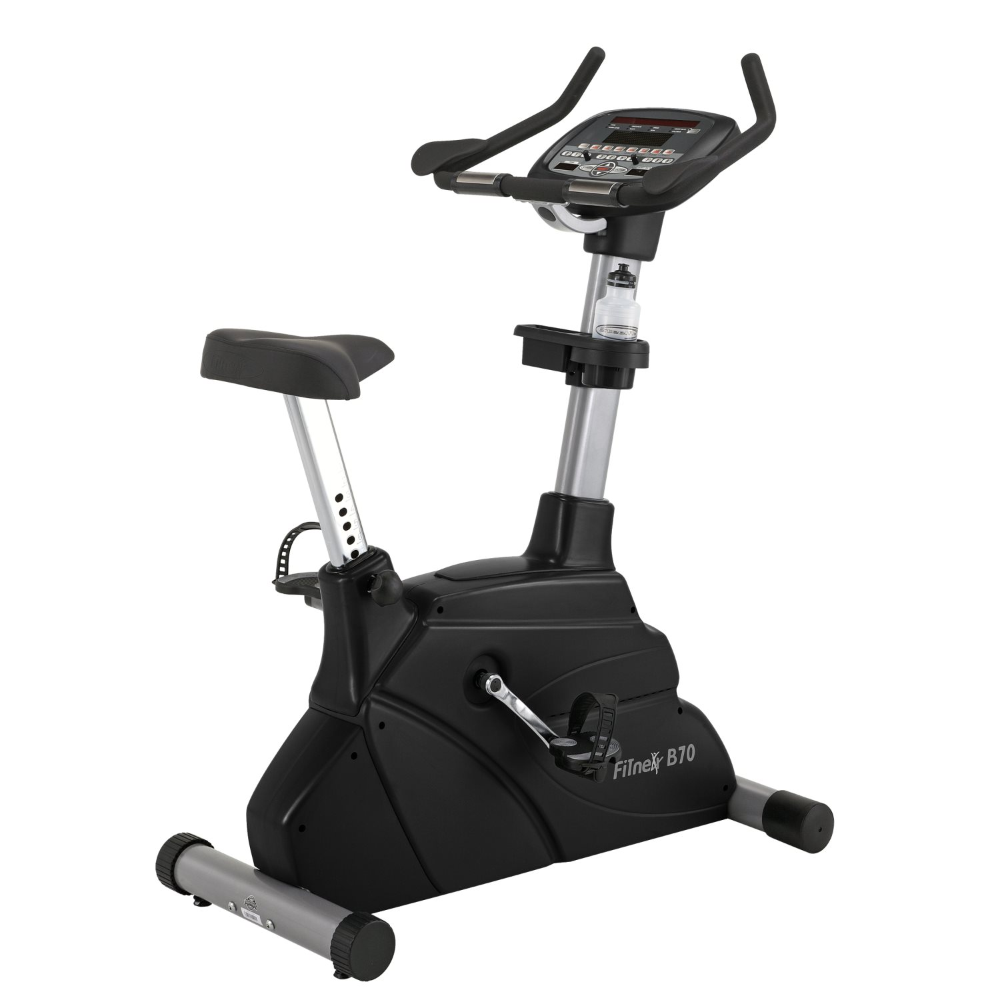
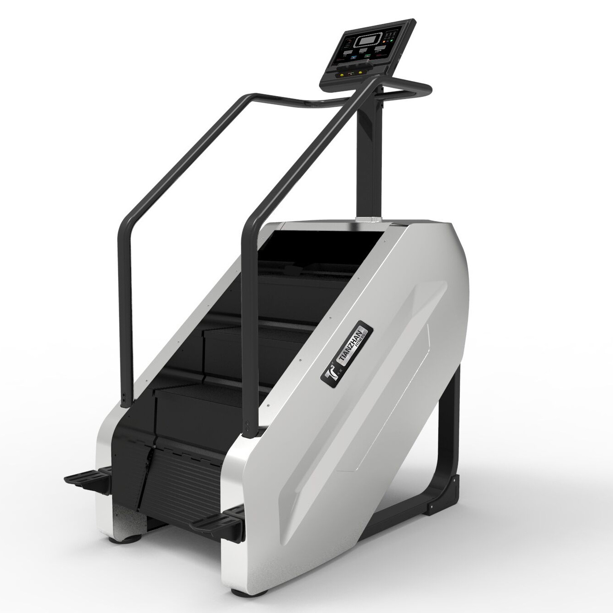
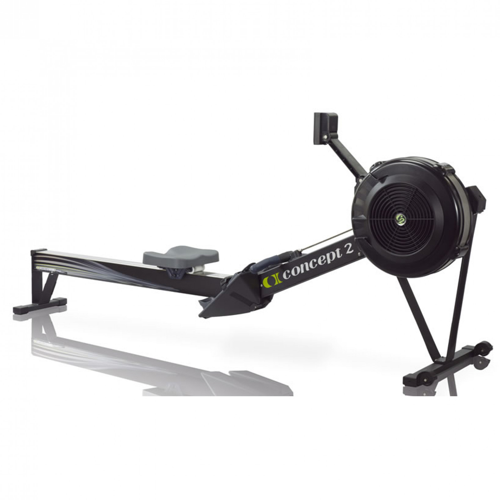
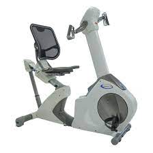

Common Cardio Equipment found in a Gym
Cardiocascular exercise is recommended by the American College of Sports Medicine (ACSM) to be undertaken for a minimum of 90mins across a week in order to reap the main benefits which include:
Weight Loss
Improved Lung Capacity
Boosting Energy Levels
Stronger Immune Response
Better Quality of Sleep
Improved Mental Health
Reduces Risk of Disease
Stronger Heart Function
With these benefits in mind it's a wonder why some individuals may choose to not reap the rewards of such a beneficial activity, however it can sometimes be as simple as not being sure of how to perform activities correctly and feeling emabarrased to ask. In order to help those of you who may be wishing to educate yourselves in how to use cardio equipment commonly found in most gyms, this website has been created for you to have an easy form of information to refer to in order to ensure activities are performed correctly and safely.
DISCLAIMER: All exercise activities are undertaken at own risk and/or under the care of a qualified healthcare professional.
Scroll down to see some different types of cardio machines that you may find in a commercial gym and what they are for.
Treadmill
This piece of equipment is used for walking or running with much less impact on joints due to the cushioned impact when on the evenly based moving platform. It also has the facility to be adjusted on an incline which can increase intensity to simulate walking or running uphill.
Eliptical/Cross-trainer AKA Skywalker
This machine is used to work out both the upper and lower body at the same time although using the fixed handles allows just the lower half to be activated. It reduces pressure on joints and reduces the risk of impact injuries which is why it is usually selected for individuals who are overweight or overcoming injury.
Exercise Bike
The stationary exercise bike is used to allows just the lower half of the body to be activated while the upper body stays fixed. It reduces pressure on joints and reduces the risk of impact injuries which is why it is usually selected for high intensity cardio exercise such as group spin classes on units specifically designed for higher intensity workouts.
Stairmill
This machine simulates the experience or walking upstairs which is a great way to build lower body and core strength, however a user must be aware that form should remain as such as to have the torso upright and not lean forward and end up compensating for the muscles that are being targeted.
Rower
This machine is the one known in the fitness industry as being the most energy intensive cardio machine due to the use of the whole body in performing the motion correctly. Due to the nature of the whole body being involved in doing this exercise it is KEY for users to understand the importance of ensuring good form to prevent injury.
Bicycle Ergometer AKA Arm bike
This machine is used primarily by people who may need to isolate the upper body such as boxers and rowers through to those who may suffer from an injury of the lower body. It works under the same principle as a traditional exercise bike with the primary differences being the positioning of pulleys and motors and the resistance offered by these types of machine being less than would be required for the lower body due to the proportional difference in strength between the upper and lower limbs.